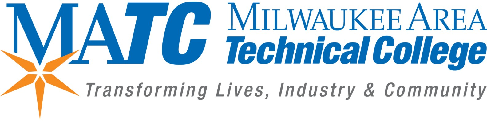
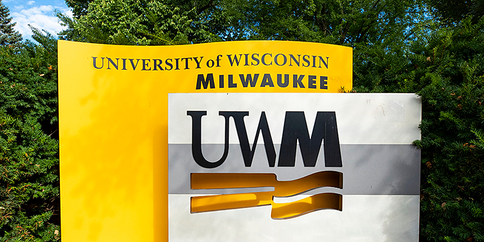

My Career Goals - an Unconventional Approach
I'm currently a dual enrollment student in highschool studying at Milwaukee Area Technical College in the IT Academy. In my highschool endevours, I was able to complete all of my credits early, therefore, this year I didn't need to take any classes at my highschool and am able to go all into IT with MATC.
While I'm currently in dual enrollment, I've been accepted into the Systems Security Program at MATC, in which I'll be persuing an associates degree. However, I plan on taking credit-transferable classes for a 4-year program at UW Milwaukee in order to maximize my money's worth, and get ahead in my degree.

While some programs transfer from MATC to UWM... IT to Business does not. I plan on studying business at UWM, meaning that I need an unconventional plan in order to complete a degree at MATC while also earning credits for UWM to bridge that gap between IT and Business. I plan on studing IT Management at UWM along with Finance.
